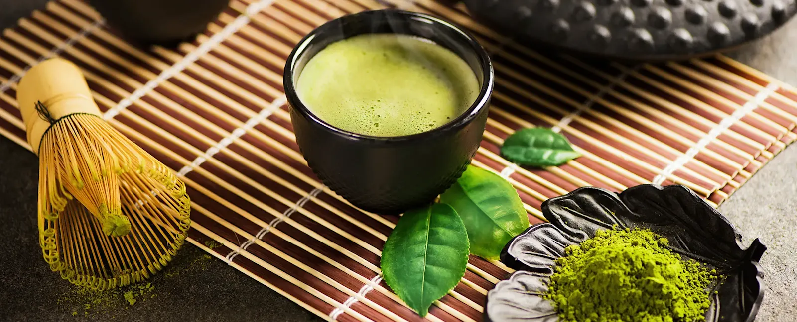
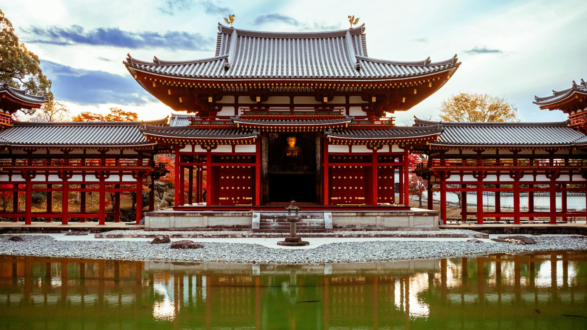
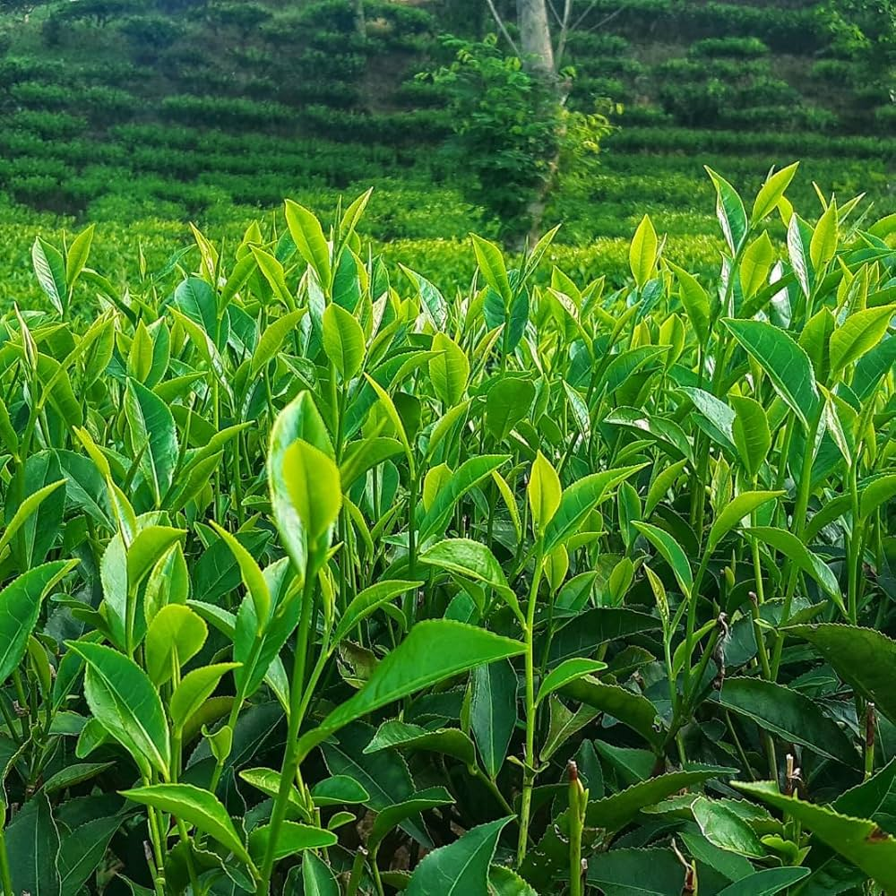
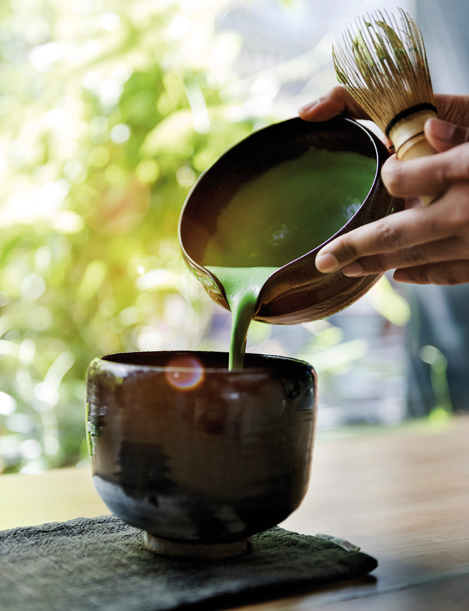
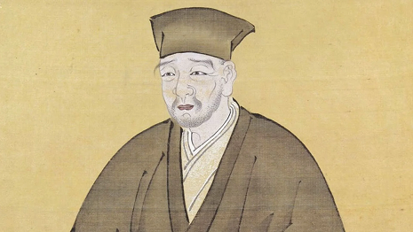

Camelia Sinesis
L’oro verde del Giappone: energia, concentrazione e purezza

Il Matcha è una polvere finissima ottenuta dalla vaporizzazione, asciugatura e lenta macinatura a pietra delle foglie di Camellia Sinensis. Viene consumato per sospensione e non per infusione: l'utente ingerisce l'intera foglia, assorbendo il 100% di nutrienti e proprietà organolettiche racchiuse nella pianta.
Le zone di produzione più pregiate si trovano in Giappone:
Uji (Kyoto) e Nishio (Aichi), dove il clima umido e il suolo fertile offrono le condizioni ideali.

Il segreto della sua qualità risiede nella raccolta: 20-30 giorni prima della primavera, le piantagioni vengono coperte con telai di paglia o reti per ombreggiare le foglie; questo rallenta la crescita, aumentando i livelli di clorofilla e conferendo al Matcha il suo caratteristico colore verde brillante e il sapore "umami". Solo le foglie più tenere vengono raccolte a mano per i gradi più pregiati.




Sebbene oggi sia un simbolo della cultura giapponese, l'origine del tè in polvere risale alla Cina della dinastia Tang (VII-X secolo). Fu però nel XII secolo che il monaco buddista Eisai portò i semi e il metodo di preparazione in Giappone, intuendo le proprietà benefiche per la meditazione. Con il tempo, il Matcha è diventato il cuore pulsante della Cerimonia del Tè (Chado), un rituale spirituale basato sui principi di armonia, rispetto, purezza e tranquillità.
Il Matcha è considerato un "superfood" per eccellenza grazie alla sua densità nutrizionale: